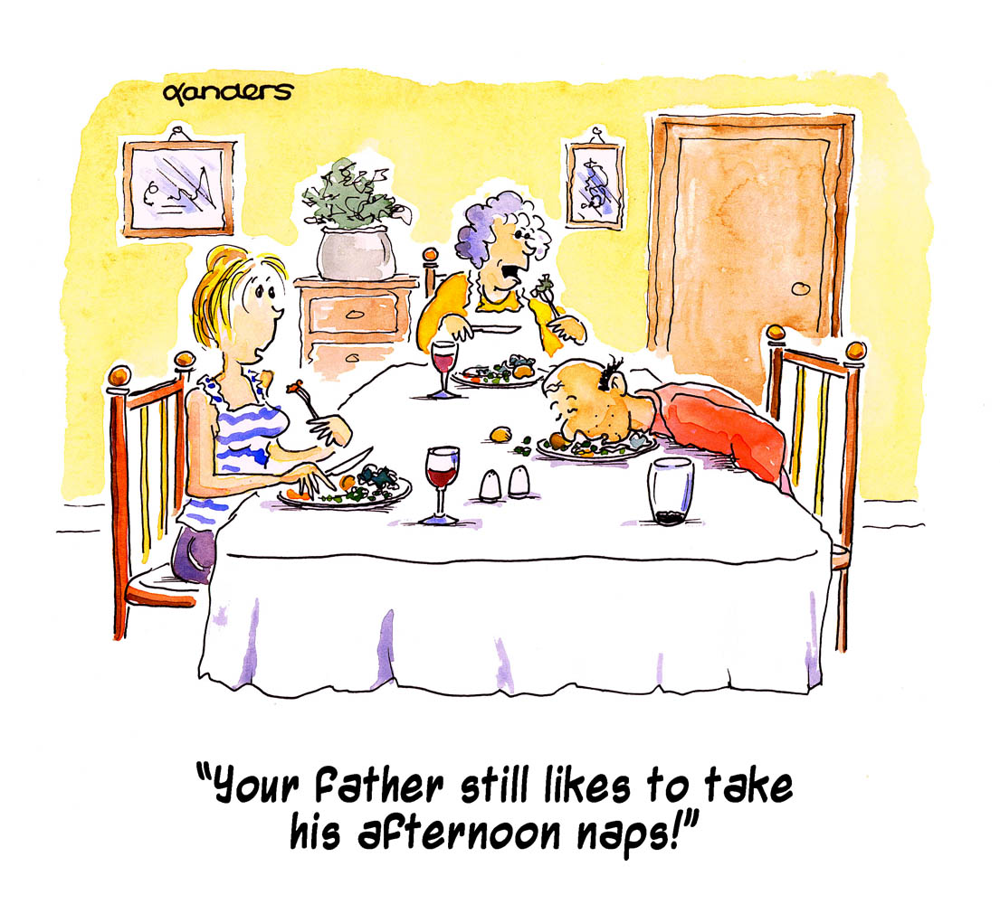

Cartoons come in many different types and are enjoyed by children all around the world.
Some cartoons are educational, while others are designed to be funny and entertaining.
Popular children's cartoons include
Peppa Pig,
Masha and the Bear,
and
Butterbean's Cafe.
These cartoons are loved by kids for their colorful characters,
exciting stories, and valuable life lessons.
So, let's start our journey towards the cartoons
🐷 Peppa Pig
🐻 Masha & Bear
🧁 Butterbean's Cafe
So,this is the image of peppa pig now lets look on the history of this cartoon
The official backstory of Peppa Pig is that she's a cheerful, muddy-puddle-loving piglet in a British preschool
show, living with her family(Mummy Pig, Daddy Pig, George) and friends, with the show starting in 2004
and focusing
on everyday adventures. However, many fan theories and creepy urban legends suggest darker, real-life origins,
including tragic stories fromrural England, schizophrenia interpretations of Grandma Pig,
or allegories to Orwell's
Animal Farm, though these aren't part of theofficial canon.
See this image, it is the image of Masha and the bear and now you can see the history too.
The animated show Masha and the Bear is based on aRussian folk tale but internet theories offer
dark, fictional
backstories, including one where Masha is lost and eaten by a bear, and the Bear is a retired circus performer who
adopted a bear cub. The show itself portrays Masha as a mischievous but lovable girl who befriends a retired circus
bear, creating chaos but also fun adventures, while the bear finds his peaceful life turned upside down.
As you saw the image of our new cartoon Butterbeen Cafe, so lets start our journey to see the history of our
new cartoon
Butterbeen cafe is a
Nickelodeon animated
series about fairy chef Butterbean and her friends running a magical café in Puddlebrook, emphasizing farm-to-table
cooking and leadership skills, created by Jonny Belt & Robert Scull (of Bubble Guppies fame) and airing from
2018-2020, focusing on themes like kindness, teamwork, and using enchanted tools to create healthy treats.
The show
followed a social-emotional curriculum, teaching young viewers valuable life lessons through fantastical culinary
adventures, facing challenges from rival Ms. Marmalady
So,these are some pictures of cartoons usually watched by children
The history of cartoons spans from early sequential art to modern CGI, beginning with Victorian optical toys
(Zoetrope) and early projected shows like Émile Reynaud's 1892 Pantomimes Lumineuses, with Émile Cohl's
Fantasmagorie (1908) considered the first true animated cartoon.The 1920s-1930s brought the "Golden Age"
with sound
(Disney's Steamboat Willie) and color, shifting to TV in the 1950s (limited animation) and experiencing a resurgence
in the 1980s. The 1990s introduced CGI (Pixar's Toy Story), diverse genres, streaming, and the rise of networks like
Cartoon Network.
* Ancient Roots :Cave drawings with sequential limbs,Egyptian tomb art, and Greek pottery show
early interest in depicting movement.
* Optical Toys: Devices like the Phenakistoscope(1832) and Zoetrope (1834) used persistence of vision
to create movement from drawings.
* Political Cartoons: Early 19th-century newspapers used cartoons for social
commentary (e.g., Punch
magazine),they combine art and satire too.
* Film Experiments: Émile Reynaud's Théâtre Optique (1892) projected hand-painted images, considered
first public animated films.
A cartoon is a type of visual art that is typically drawn, frequently animated, in an unrealistic or
semi-realistic style. The specific meaning has evolved, but the modern usage usually refers to either: an image or
series of images intended for satire, caricature, or humor; or a motion picture that relies on a sequence of
illustrations for its animation. Someone who creates cartoons in the first sense is called a cartoonist
,[1] and in
the second sense they are usually called an animator.
The concept originated in the Middle Ages, and first described a preparatory drawing for a piece of art, such as a
painting, fresco, tapestry, or stained glass window. In the 19th century, beginning in Punch magazine
in 1843,
cartoon came to refer – ironically at first – to humorous artworks in magazines and newspapers. Then it also was
used for political cartoons and comic strips. When the medium developed, in the early 20th century
,it began to
refer to animated films that resembled print cartoons.[2]
* Fine art *
Christ's Charge to Peter, one of the Raphael Cartoons, c. 1516, a full-size cartoon design for a tapestry
In fine art, a cartoon (from Italian: cartone and Dutch: karton—words describing strong, heavy paper or pasteboard
and cognates for carton) is a full-size drawing made on sturdy paper as a design or modello for a painting, stained
glass, or tapestry. Cartoons were typically used in the production of frescoes, to accurately link the component
parts of the composition when painted on damp plaster over a series of days (giornate).[3] In media such as stained
tapestry or stained glass, the cartoon was handed over by the artist to the skilled craftsmen who produced the final
work.
Cartoons can also be divided into Gag cartoons, which include Editorial cartoons, and Comic stripsin it
<> Gag cartoons <>
Editorial cartoons
Gag cartoons, focusing on humor rather than politics,
evolved from early newspaper satirical drawings
(like Benjamin Franklin's "Join, or Die") and late
19th-century comic strips, blossoming with silent
film antics and later mastering the single-panel
magazine format (think The New Yorker), before
exploding into animated TV series, becoming a
staple of mass media with iconic figures like
Mickey Mouse or modern webcomics, always relying
on visual punchlines, relatable situations,
and character-drivensilliness for laughs.

So lets learn about our second heading and that is.....
Comic strips
The history of comic strips can be traced from ancient forms of sequential art to their emergence as a mass medium in
newspapers, and their modern evolution into digital formats and graphic novels.
Early Precursors
Storytelling through sequential images has ancient roots, predating modern printing by centuries.
So,as we saw the Divisions,Episode,Photos and History over cartoons,but we only saw about cartoons but
movies are also there so click on this linkhttp/bigcartoons/..for
understanding the history and many things else about movies or we can say films too